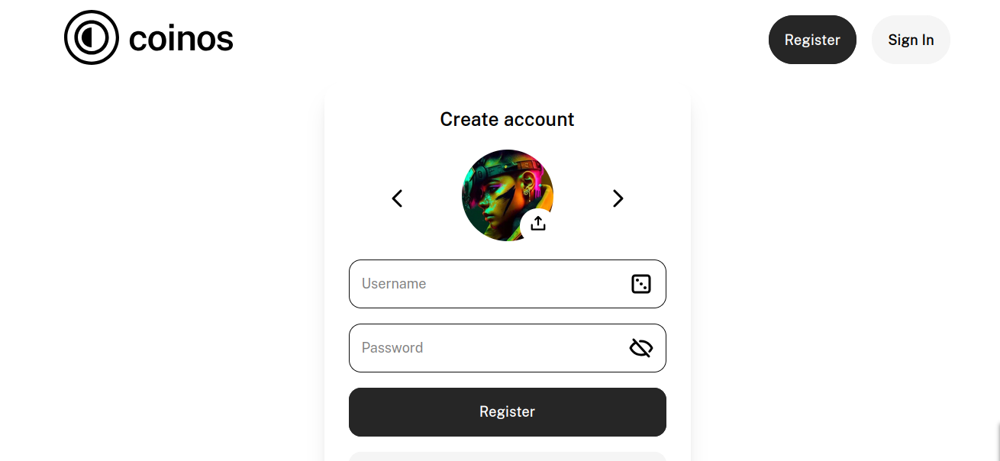

⚡ How to Donate with Bitcoin Lightning
A plain-English guide — no crypto experience needed
DirectSponsor uses Bitcoin Lightning for all donations. This page explains why, and walks you through getting set up so you can send your first donation in minutes.
❓ Why Bitcoin Lightning?
Lightning is the only payment method that lets us do all of the following at once:
- Instant confirmation — we know the moment your payment arrives, so we can credit it to the right fundraiser automatically
- No intermediary — your money goes directly to the recipient's wallet, not through our accounts
- No platform custody — DirectSponsor never holds your money at any point
- Works internationally — same process whether you're in the UK or Kenya, no bank-transfer friction
- Tiny fees — typically a fraction of a penny, compared to 3–5% for card payments
🏦 Why Not Bank Transfers?
Bank transfers sound simple but create serious problems for a platform like this:
- No reliable matching — there's no standard way to link an incoming bank payment to a specific fundraiser without building a full merchant system
- International fees are brutal — sending $20 from Europe to Kenya via SWIFT can lose $5–10 in fees alone
- Intermediaries — money passes through correspondent banks, currency exchanges, and sometimes payment processors before reaching the recipient
- Delays — international transfers can take 2–5 business days; Lightning settles in seconds
We may revisit bank transfers for specific regions in future if a trusted third-party runner can bridge the gap — but Lightning remains the default.
🚀 Getting Started — Choose Your Path
Pick whichever suits you:
🆓 Path A: Free Start
Get a small amount of free sats from faucets — enough to test a donation. Good for first-timers who want to try before spending anything.
💳 Path B: Buy Sats
Buy Bitcoin Lightning with a regular bank transfer via Mt Pelerin — no KYC for small amounts, straightforward process.
⚡ Path C: Already Have a Wallet
Already using a Lightning wallet (Phoenix, Wallet of Satoshi, Muun, etc.)? Skip straight to donating.
🆓 Path A: Get Free Sats to Start
Step 1 — Create a free Coinos wallet
Coinos.io is a free, browser-based Lightning wallet with no KYC (no ID required). It takes about 60 seconds to sign up.

Step 2 — Get free sats from a faucet
These faucets give out small amounts of Lightning sats for free — enough to make a real test donation:
- litebits.io — between 0.5 and 5 sats every 5 minuts. Daily bonus too. You can withdraw at 100, it doesnt take long.
- satsman.com — Once-a-day, high paying but will take some time.
- ROFLFaucet — our own faucet, earn coins by playing games
[TODO: Add step-by-step screenshots or a short video walkthrough of claiming from a faucet into Coinos]
Step 3 — Donate
Once your Coinos wallet has sats, head to any fundraiser page, click Donate, and scan or paste the Lightning invoice. Done.
💳 Path B: Buy Sats with a Bank Transfer
Mt Pelerin is a Swiss exchange that lets you buy Bitcoin with a regular bank transfer. No KYC is required for small amounts.
Step 1 — Create a Coinos wallet
If you haven't already, create a free Coinos account and copy your Lightning address (it looks like yourname@coinos.io).
Step 2 — Buy sats via Mt Pelerin
[TODO: Walk through Mt Pelerin step by step — amounts, fees, how to set the destination Lightning address, how long it takes. Include screenshots if possible.]
Step 3 — Donate
Once your Coinos wallet shows a balance, go to any fundraiser and click Donate.
⚡ Path C: Already Have a Lightning Wallet
Any Lightning-compatible wallet will work — Phoenix, Wallet of Satoshi, Breez, Muun, Zeus, and others. Just:
- Go to any fundraiser page
- Click the Donate button and pick an amount
- Scan the QR code, or copy the Lightning invoice and paste it into your wallet
- Confirm the payment in your wallet
The fundraiser page will update automatically within a few seconds once payment is confirmed.
🙋 Common Questions
Is it safe?
Yes. Coinos is non-custodial for on-chain funds and well-established. Lightning payments are final and can't be reversed, so double-check the amount before confirming.
What's the minimum donation?
There's no platform minimum — Lightning can send tiny amounts (even a few pence). The practical minimum depends on your wallet's fee settings.
Can I get a refund?
Lightning payments are irreversible by design — this is also what makes them trustworthy for recipients. Please only donate what you intend to give.
What currency do recipients receive?
They receive Bitcoin (sats). Recipients with a Coinos wallet can convert to local currency if needed. [TODO: add more detail here once you know how lightninglova and evans actually cash out]
I'm stuck — who can I ask?
Contact us and we'll help you through it.